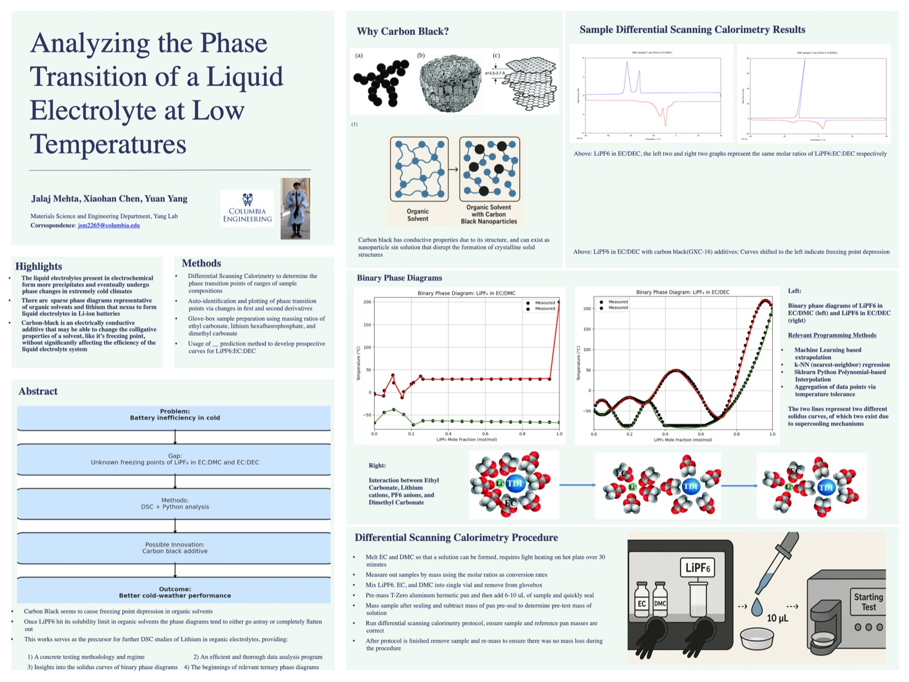
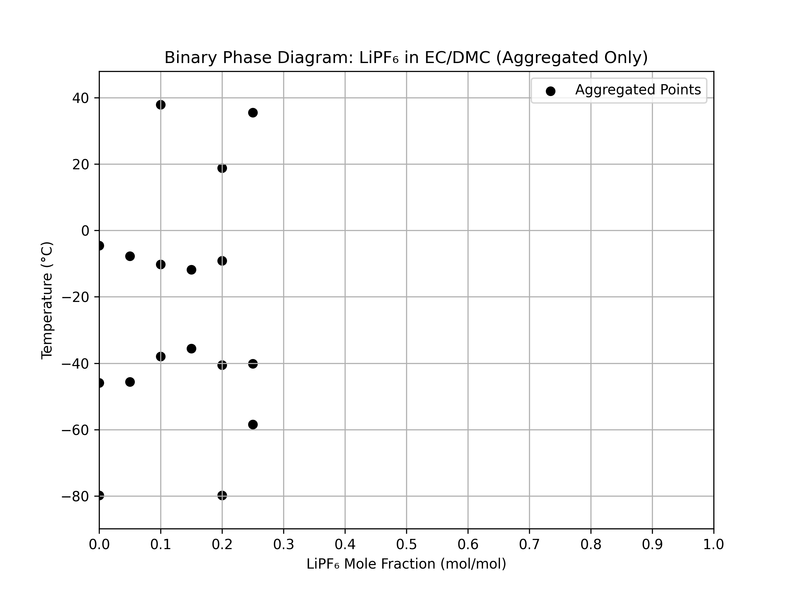
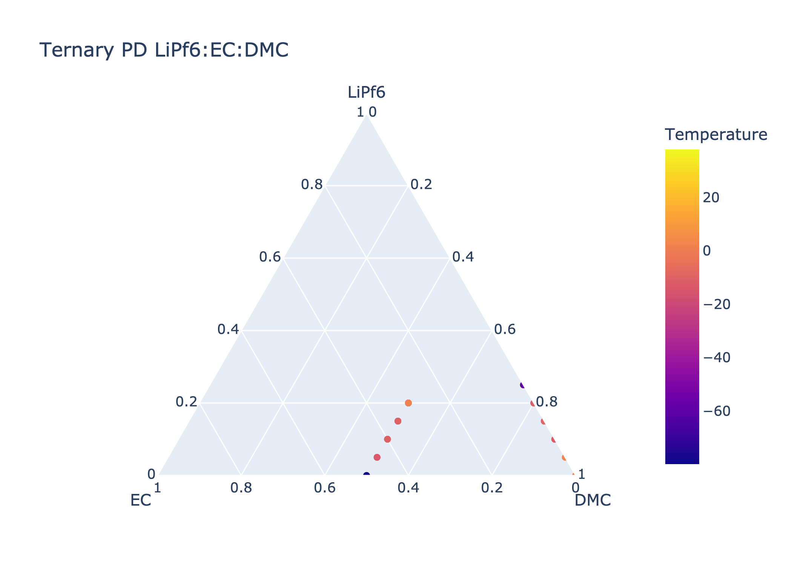
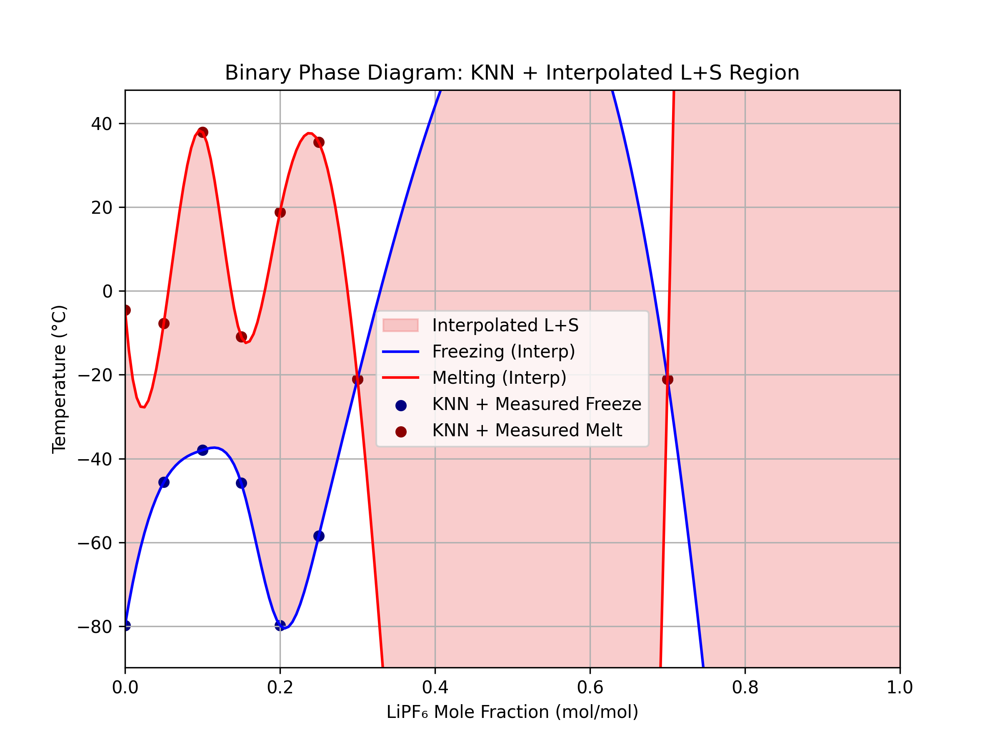
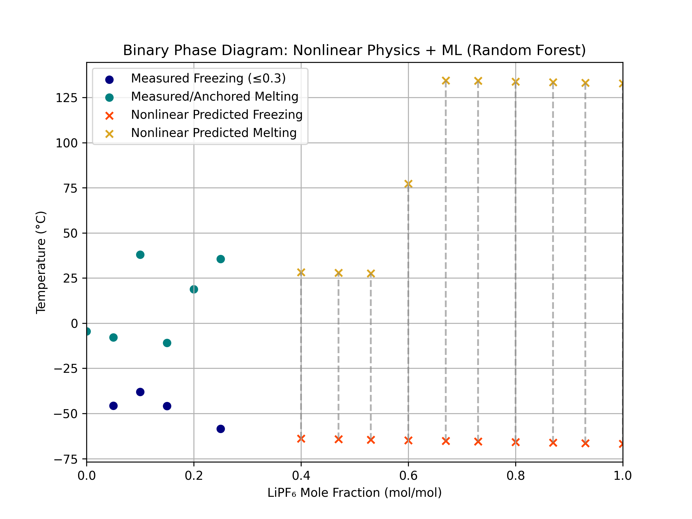
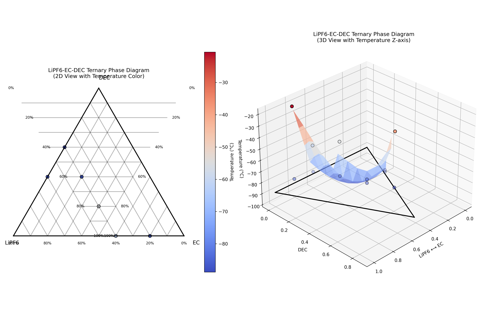
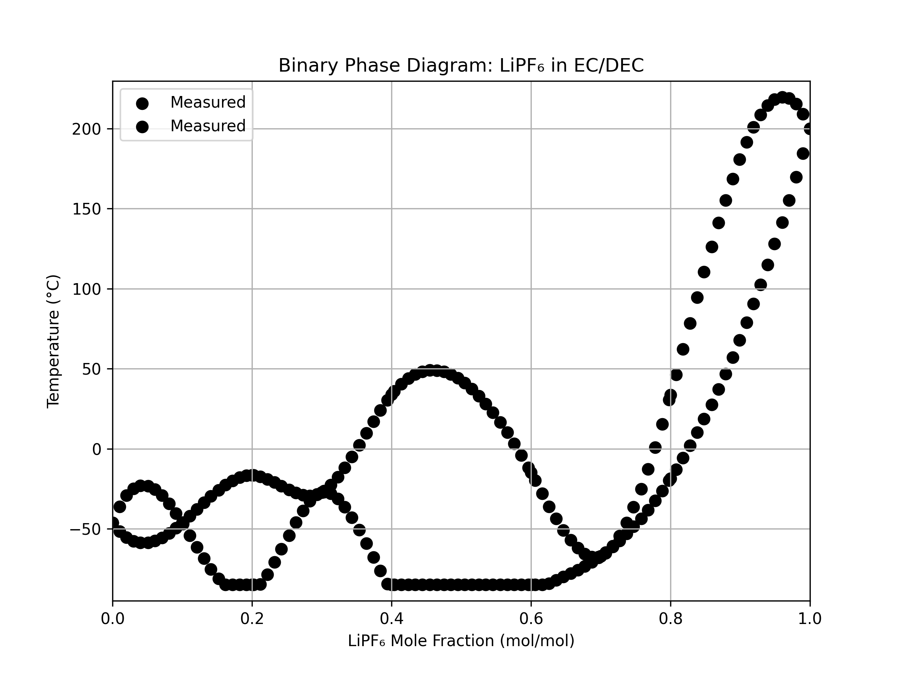
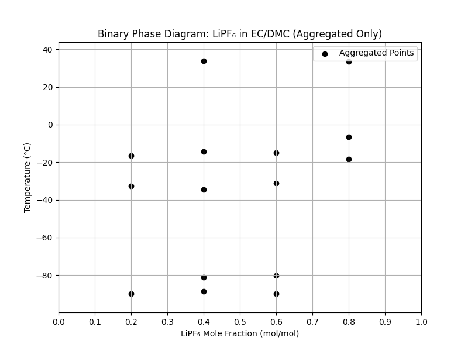

Projects
A selection of research, engineering, and software projects.
Senior Design Project: Electrolyte Phase Diagrams
For my senior capstone at Columbia, I developed phase diagrams for organic liquid electrolyte systems (LiPF6 in EC/DMC and EC/DEC solvents) used in next-generation batteries. The aim was a lighter, more energy-dense electrochemical cell built around SPAN anodes.
I wrote a Python pipeline that reads raw DSC (Differential Scanning Calorimetry) heat ramp data, finds phase transition peaks with an adaptive search, and maps them to composition. From there it generates binary and ternary phase diagrams and uses KNN imputation and Random Forest regression to fill in missing points and predict solidus and liquidus lines across the full composition range.
The parts I'm most proud of: a peak-finding algorithm that ranks candidates by weighted slope and magnitude, automated handling of dozens of XLS files at different compositions, and clean, publication-ready plots of the phase boundaries.
Senior Design Poster

Phase Diagrams & Visualizations







DNA Crystal Metalization: Gang Lab / Brookhaven National Lab


Microscopy from the DNA crystal metalization experiments. The lattices are shown before and after iron oxide infiltration at different incubation times and conditions (FeCl2, FeCl3, wet vs. dried samples).
Over two years in the Gang Lab at Columbia and as a visiting researcher at Brookhaven National Lab, I worked out a new procedure to metalize DNA crystal lattices by infiltrating them with iron oxide. The idea was to use DNA as a programmable scaffold for building 3D nanostructured materials.
I synthesized the crystals and characterized them with scanning electron microscopy (SEM), transmission electron microscopy (TEM), focused ion beam (FIB) milling, optical microscopy, X-ray diffraction (XRD), and energy-dispersive X-ray spectroscopy (EDX). I also worked out nanoindentation protocols to measure their mechanical properties, along with methods to pull elastic modulus and hardness out of the raw indentation data.
Crystal Grain Analysis Program: Mickey Leland Energy Fellowship

During my fellowship at the National Energy Technology Laboratory (part of the U.S. Department of Energy), I wrote a Python program to automatically process transmission electron microscopy (TEM) images of metal alloy microstructures.
It uses 3D matrix math to calculate crystal grain misorientation angles and axes from diffraction pattern data. I packaged it as a standalone executable with a Tkinter interface so researchers who don't code could still run it. I presented the work at a Department of Energy Symposium in Washington, D.C.
PhotoLearn: Interactive Photography Tutor
PhotoLearn is a web app that teaches the fundamentals of photography through hands-on simulators, quizzes, and a creative playground. We built it for Columbia's User Interface Design course (COMS W 4170), with real-time simulators for ISO, aperture, and shutter speed.
It walks you through a step-by-step learning flow with interactive simulators and progress tracking, quizzes that mix simulator and scenario questions, and a playground where you upload your own photos and change camera settings on the fly. The frontend is Next.js/React/TypeScript, with a Flask backend that leaves room to grow the API.
Team: Jalaj Mehta, Shivan Mukherjee, Allyce Chung, Janie
Technical Writing: The Heat Problem in Semiconductors
A writing sample on the growing thermal management problem in the semiconductor industry. It walks through the physics of heat generation in modern chips (dynamic power dissipation, leakage currents, and electromigration), then looks at two frontier fixes: topological semimetals (TSMs) in place of copper interconnects, and biomimetic microfluidic cooling.
I explain why TSMs resist surface scattering at the nanoscale thanks to their Fermi arc surface states, and how microfluidic channels etched straight into silicon can cut peak temperatures by up to 65%. Both are cases of materials science aimed squarely at one of computing's hardest bottlenecks.
Flame-Retardant Hydrogel Research: Garcia Program
In the Garcia Research Program at SUNY Stony Brook, I made biodegradable hydrogel flame retardants from physically cross-linked PVA bases with starch and RDP particles embedded in them. The work led to a peer-reviewed paper in the American Chemical Society's Biomacromolecules journal (2021): “Synthesis of an Effective Flame-Retardant Hydrogel for Skin Protection Using Xanthan Gum and Resorcinol Bis(diphenyl phosphate)-Coated Starch.”
I also studied UIO-66 metal-organic frameworks with the Lattice Boltzmann model to propose reaction mechanisms for carbon capture and predict how diffusion coefficients would shift. I presented this work at the Fall 2019 Materials Research Society Conference in Boston.
Hydrogel Tribology: Literature Review & Critical Analysis
A graduate-level critical review of three recent frontier papers in hydrogel tribology, written for my M.S.E. coursework at Penn. It compares three experimental approaches to controlling friction in soft hydrated materials, which matters for biomedical device coatings, artificial cartilage, contact lenses, and soft robotics.
The three works examined are: (1) ion-dependent frictional modulation in PVA hydrogels via the Hofmeister effect (Wu et al., Macromolecules 2025); (2) superlubricious polyacrylamide hydrogels engineered through spontaneous oxygen-peroxidation gradients (Chau et al., ACS Applied Materials & Interfaces 2023); and (3) dynamically tunable hydrogel friction through reversible host–guest regrafting of polymer brushes onto a supramolecular network (Liu et al., Langmuir 2026).
It pulls together the main lubrication mechanisms (poroelastic weeping, hydrodynamic, and boundary), works through each study's methods and limitations, and draws out a few common structure–property relationships. Surface hydration sets boundary friction no matter the chemistry. Separating surface structure from bulk mechanics is the key to hydrogels that bear load but still slide easily. And tuning friction on demand through stimuli-responsive surfaces is where the field is heading.
CounselAI: Customer Needs Document
A customer discovery and market research document I wrote for the Engineering Product Management course, part of Penn's entrepreneurship class offerings (Spring 2026). It defines the product opportunity, the target segment, and the ranked customer needs for CounselAI, a proposed litigation-first AI legal assistant for small to mid-size law firms (5 to 200 attorneys).
The research came from 5 primary interviews with practicing attorneys and firm administrators, plus 2 supplemental simulated profiles, checked against secondary sources like the 2025 Clio Legal Trends Report, the Draftwise Legal AI Landscape Guide, and Artificial Lawyer industry surveys. The document covers market sizing ($3.1B growing to $10.8B by 2030), the competitive landscape (Harvey, Legora, August, Thomson Reuters CoCounsel, Draftwise), user personas, and a value proposition statement.
The key insight: attorneys don’t distrust AI because it’s slow. They distrust it because they can’t verify it. So the design principle is simple: every AI output has to show its source inline, right where you use it, so checking the work saves time instead of costing it. The white space is a research-to-draft workflow in one tool, priced for firms of 5 to 20 attorneys. August (transactional focus, $375/user/month) and Harvey/Legora (enterprise onboarding) both leave that gap open.